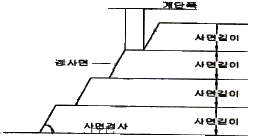
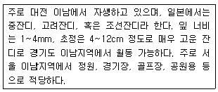
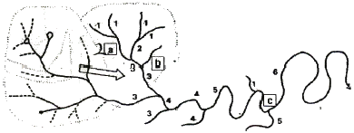
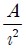
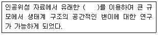
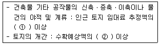
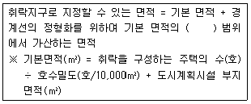
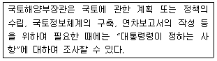
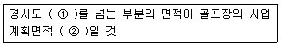

자연생태복원기사(구) (2011-03-20 기출문제)
1과목: 환경생태학개론
1. 지구온난화 결과 발생하는 환경생태계의 변화 설명으로 틀린것은?
- 고산지대와 극지방 빙하의 용해를 가속화시킬 것이다.
- 세균, 곰팡이 등 병원균의 번창을 유도할 수 있다.
- 일상적 문제는 저위도 지역 사람들에게 영향이 더 클 것이다.
- 기후대 변화에 따라 동, 식물의 서식 분포가 많이 변할 수 있다.
(정답률: 78%)

2. 생물농축을 일으키는 물질이라고 할 수 없는 것은?
- 수은
- 철
- DDT
- 방사능 물질
(정답률: 79%)
3. 다음 중 생물간에 상호 피해를 주는 관계는?
- 중립
- 경쟁
- 공생
- 공존
(정답률: 85%)
4. 담수 또는 연안에서 조류발생과 가장 관련이 깊은 환경요인으로만 구성된 것은?
- 광선, 영양물질, 온도 등의 상호작용
- 영양물질, 이산화탄소의 농도, 수질오염원의 상호작용
- 온도와 난류, 용존산소량의 증가, 수질오염원의 상호작용
- 용존산소량, 온도, 광선 등의 상호작용
(정답률: 50%)
5. 생물학적 오염(biological pollution)의 예로 옳은 것은?
- 질병에 감염된 생명체를 자연계로 방사한다.
- 먹이 사슬에 의해 수은이나 납 같은 중금속이 자연계 내 생물들의 체내에 축적된다.
- 어획량을 늘리기 위해 팔당호에 베스를 방사했다.
- 생물의 사체에 의해 부영양화가 발생한다.
(정답률: 74%)
6. 두 생물 간에 상리공생(mutualism) 관계에 해당하는 것은?
- 관속 식물과 뿌리에 붙어 있는 균근균(mycorrhizalfungi)
- 호두나무와 일반 잡초
- 인삼 또는 가지과 작물의 연작
- 복숭아 과수원의 고사목 식재지에 보식한 복숭아 묘목
(정답률: 74%)
7. 어떤 특정 시간에 특정 공간을 차지하는 같은 종류의 생물 집단을 무엇이라고 하는가?
- 생태군
- 개체군
- 우점군
- 분류근
(정답률: 71%)
8. 엘리뇨 현상에 대한 설명으로 틀린 것은?
- 열대 남미 페루연안까지 영향을 미치는 현상이다.
- 해수면의 온도가 평년보다 낮아지는 현상이다.
- 무역풍이 약해지는 경우 발생한다.
- 인도네시아, 필리핀에서는 대체로 가뭄이 발생하곤 한다.
(정답률: 79%)
9. 낙엽의 분해속도는 기후조건, 낙엽의 종류, 토양의 조건에 따라 크게 다른데, 산림생태계에서 연간 지상 낙엽의 분해 속도가 가장 빠른 것은?
- 열대림
- 온대활엽수림
- 한 대림
- 고산침엽수림
(정답률: 67%)
10. 환경문제는 별개 문제들의 단순한 혼합물이 아니라 문제간에 상호 연관된 복합체로 파악할 수 있으며, 그 구조적 특성을 살펴보면 대체로 몇 가지의 특성을 지니고 있다. 그에 상응하지 않는 것은?
- 상호 관련성
- 시차성
- 탄력성과 비가역성
- 구조적 모순성
(정답률: 70%)
11. 초원지대의 경우 낙엽수림으로 쉽게 천이되지 않고 초원이 유지되는 가장 큰 이유는 무엇인가?
- 강수량이 적기 때문
- 주기적인 불이나 초식동물의 활동
- 사람들의 농경 활동
- 주변에 낙엽수림이 없기 때문
(정답률: 58%)
12. 조간대 서식 생물종의 유생들은 자신들의 번식을 위해 적절한 장소에 착저하게 된다. 다음 모래 및 갯벌 등의 퇴적물에 서식하는 무척추동물의 착저 행동에 대한 설명으로 옳지 않은 것은?
- 보래나 갯벌에 분포하는 동물들은 암반조간대의 부착성 동물과는 달리 상당수준의 운동능력을 가지고 있다.
- 퇴적물 조간대에 분포하는 동물들은 착저 초기에 선택하는 최초의 장소가 생존에 결정적인 영향을 미친다.
- 모래나 갯벌에 분포하는 동물들은 착저 후 몇 시간 안에 주변의 동물상이나 미세지형을 변화시킬 수 있다.
- 퇴적물이라는 기질은 착저하는 유생들에게 다양한 물리적인 그리고 생물적인 착저 단서를 제공하고 있지 않다.
(정답률: 29%)
13. 습지의 간이기능평가(Rapid Assessment of wetlands) 중 식생 다양성 및 야생동물 서식처의 평가를 위한 항목이 아닌것은?
- 유입 및 유출 형태
- 식물 군집의 수
- 주변 토지 이용
- 야생동물의 이동 통로
(정답률: 40%)
14. 방사능 누출에 의해 생태계의 피해가 일어난 사례가 아닌 것은?
- 체르노빌 사건
- 쓰리마일 아일랜드 발전소 사건
- Torrey Canyon호 사고
- 영국 Bradwell 발전소 사건
(정답률: 75%)
15. 다음 중 개체군의 밀도 조절에 관한 설명으로 틀린 것은?
- 동물개체군은 과밀을 인식하여 세력권을 형성한다.
- 밀도의존요인에 의해서도 조절된다.
- 개체군은 매년 반드시 지수적으로 증가한다.
- 대부분의 종은 전년도와 비슷한 밀도를 갖는다.
(정답률: 84%)
16. 호수의 수질개선을 위한 생태기술이 아닌 것은?
- 습지 이용
- 심층수 폭기
- 가두리 양식
- 표층수 혼합
(정답률: 78%)
17. 동시출생집단은 사고, 영양부족, 전염병 등의 환경제한을 받아 수명이 짧아지게 되는데, 다음 중 이를 뜻하는 용어는?
- 생태적 수명
- 물리적 수명
- 생리적 수명
- 제한적 수명
(정답률: 53%)
18. 생물이 살아가는 환경에 있어 내성범위에 관한 설명으로 옳지 않은 것은?
- 생물은 내성범위의 중앙에서 가장 잘 자라는 최적범위를 갖는다.
- 금붕어가 살 수 있는 수온의 내성범위는 6~36.6℃이다.
- 생물이 자라는 정도와 환경요인과의 관계에 있어 S자 모양의 곡선을 나타낸다.
- 콩의 광합성은 30℃ 정도에서 가장 빠르다.
(정답률: 35%)
19. 주어진 서식지의 특징적인 일련의 단계를 거쳐 오랜 기간 안정하게 유지되고 있는 군집은?
- 개척군집(pioneer community)
- 천이군집(successional community)
- 극상군집(climax community)
- 안정군집(stable community)
(정답률: 74%)
20. 다음 중 람사(Ramsar) 협약에 관한 설명으로 가장 적합한 것은?
- 지구온난화 방지 협약
- 국제적으로 중요한 습지 협약
- 생물종다양성 보존 협약
- 프레온가스 감축 협약
(정답률: 73%)
2과목: 환경계획학
21. 생물다양성을 높이고 야생 동ㆍ식물의 서식지간의 이동가능성 등 생태계의 연속성을 높이거나 특정한 생물종의 서식 조건을 개선하기 위하여 조성하는 생물서식공간은?
- 소생태계
- 소생물권
- 생태연결통로
- 생태축
(정답률: 50%)
22. 국토계획체계와 환경계획체계의 연계방안은 국토계획의 수립 단계에서 환경보전을 고려하도록 하는 방안이다. 예를 들어 도시관리계획은 환경계획 체계에서 어떤 계획과 연계될 수 있는가?
- 녹지계획
- 경관생태계획
- 도환경보전계획
- 시환경보전계획
(정답률: 46%)
23. 국토의 계획 및 이용에 관한 법률에 의해 지정된 도시지역 중 주거지역의 용적률 최고한도는?
- 300%
- 400%
- 500%
- 600%
(정답률: 40%)
24. 다음 중 생태네트워크의 구성원리 중 생물종의 이동을 촉진시키는 기능을 하는 선형 경관요소를 의미하는 용어는?
- 코리더(Corridor)
- 에지(Edge)
- 완충지역(Buffer)
- 매트릭스(Matrix)
(정답률: 55%)
25. 외국에서 최초로 생태도시에 대한 논의로 인식되는 전원 도시의 주창자와 대표적인 생태도시의 사례로 인식되는 도시와의 연결이 맞는 것은?
- 랩튼(Rapton) - 영국 리치몬드시
- 옴스테드(Olmsted) - 미국 시애틀시
- 라이트(Wright) - 멕시코의 멕시코시티
- 하워드(Ebenezer Howard) - 브라질의 꾸리찌바시
(정답률: 39%)
26. 생태적 복원은 기본적으로 외부의 영향에 의한 변화 이전 단계로 돌아가는 것을 의미하지만 그 유형은 몇 가지로 나눌수 있다. 그 유형과 내용이 잘못 된 것은?
- 복구(rehabilitation) : 완벽한 복원으로 단순한 구조의 생태계 창출
- 복원(restoration) : 교란 이전의 상태로 정확하게 돌아가기 위한 시도
- 복원(restoration) : 시간과 많은 비용이 소요되기 때문에 쉽지 않음
- 대체(replacement) : 현재 상태를 개선하기 위하여 다른 생태계로 원래의 생태계를 대체하는 것
(정답률: 57%)
27. 수도권 정비계획법의 규정에 의한 수도권에 속하지 아니하고 광역시와 경계를 같이 하지 아니한 시 또는 군으로서 도시기본계획을 수립하지 않을 수 있는 시 또는 군의 인구 규모는?
- 25만명 이하
- 20만명 이하
- 15만명 이하
- 10만명 이하
(정답률: 55%)
28. 국토기본법에 의한 국토계획의 유형이 아닌 것은?
- 국토종합계획
- 광역도시계획
- 지역계획
- 시군종합계획
(정답률: 44%)
29. 백두대간 보호에 관한 법률에 따라 산림청장은 백두대간을 효율적으로 보호하기 위하여 '백두대간보호기본계획'을 환경부장관과 협의하여 매 10년마다 수립하도록 하고 있는 바, 다음 중 기본계획에 포함되는 사항이 아닌 것은?
- 백두대간의 개발입지에 대한 장래 총량 설정 사항
- 백두대간보호지역의 지정, 지정해제 또는 구역변경에 관한사항
- 백두대간의 생태계 및 훼손지 복원, 복구에 관한 사항
- 백두대간보호지역의 토지와 입목, 건축물 등 그 토지에 정착된 물건의 매수에 관한 사항
(정답률: 34%)
30. 다음 중 생태주거단지 조성을 위한 기본계획 및 설계 과정으로 맞는 것은?
- 조성목표 및 목적설정→대상지 현황조사 및 분석→전략 설정→기본구상(기본방향 설정)→기본계획 및 설계
- 조성목표 및 목적설정→전략설정→대상지 현황조사 및 분석→기본구상(기본방향 설정)→기본계획 및 설계
- 조성목표 및 목적설정→전략설정→기본구상(기본방향 설정)→대상지 현황조사 및 분석→기본계획 및 설계
- 기본구상(기본방향 설정)→조성목표 및 목적설정→전략설정→대상지 현황조사 및 분석→기본계획 및 설계
(정답률: 40%)
31. 어메니티 플랜에 있어서 어메니티의 개념이라고 볼 수 없는 것은?
- 총체적인 환경의 질, 쾌적한 상태로서의 종합적인 환경의 질
- 경제적 가치를 부여할 수 없는 개념
- 한 사회의 경제, 정치, 사회의 발전수준과 사회구성원들의 가치관과 관습에 따라 변화할 수 있는 상대적 개념
- 인간이 기분이 좋다고 느끼는 물리적환경의 상태
(정답률: 50%)
32. 토지적성평가체계에서 분류하는 토지적성 등급 수는?
- 3개 등급
- 5개 등급
- 7개 등급
- 8개 등급
(정답률: 48%)
33. 자연환경보전법에서 자연환경보전의 기본원칙에 해당되지 않는 것은?
- 자연생태와 자연경관이 파괴ㆍ훼손되거나 침해되는 때에는 최소한 복원ㆍ복구되도록 노력해야 한다.
- 자연환경은 모든 국민의 자산으로서 공익에 적합하게 보전되고 현재와 장래의 세대를 위하여 지속가능하게 이용되어야 한다.
- 자연환경보전은 국토의 이용과 조화ㆍ균형을 이루어야 한다.
- 모든 국민이 자연환경보전에 참여하고 자연환경을 건전하게 이용할 수 있는 기회가 증진되어야 한다.
(정답률: 58%)
34. 다음 중 도시열섬현상의 원인이 아닌 것은?
- 대기오염
- 지표면의 포장증대
- 도시내 인공열의 발생
- 물의 순환성 증대
(정답률: 69%)
35. 도시에서 환경부하를 경감시키기 위한 방법으로 옳지 않은 것은?
- 콘크리트 지면의 감소
- 지표의 녹피율 증가에 따른 비오톱 공간 확보
- 도시처리공급시설의 지상화
- 야간 방열 방지
(정답률: 61%)
36. 환경용량을 평가할 때 사용되는 지표 중의 하나로 재화와 용역의 생산에 필요한 에너지 측면의 가치를 과학적으로 측정한 것은?
- 생태적 발자국
- 에머지
- 에너지 지수
- 에너지환경지표
(정답률: 30%)
37. 도시생태 네트워크 구축 시 생태네트워크를 조성하기 위한 기본적인 접근방법이 아닌 것은?
- 토지이용을 중심으로 한 방법
- 경관생태학에 의한 방법
- 생물종의 분포 및 이동에 의한 방법
- 주거이용을 중심으로 한 방법
(정답률: 61%)
38. 비오톱에 대한 설명으로 가장 적합한 것은?
- 생물서식공간이라고 번역할 수 있다.
- 작은 생물들만 서식하는 공간을 의미한다.
- 보존가치가 높은 생물들의 서식공간이다.
- 도시에는 인위적으로 조성한 비오톱만이 존재한다.
(정답률: 72%)
39. 다음 중 오염원인자 책임 원칙에 해당되지 않는 것은?
- 환경오염의 폐해를 오염을 발생시킨 자에게 부과
- 환경 정책 및 계획수립에 활용
- 환경정책기본법에 명시
- 규제해제 지향적인 수단
(정답률: 62%)
40. 과거 준도시지역과 준농림지역을 합한 지역으로 도시주변에서 장래의 개발을 수용하기 위해 설정된 지역은?
- 녹지지역
- 계획지역
- 보전지역
- 관리지역
(정답률: 35%)
3과목: 생태복원공학
41. 다음 중 토양개량 자재로써 토양의 입단 형성 촉진에 사용되는 재료는?
- 목탄
- 벤토나이트
- 폴리에틸렌계 고분자 자재
- VA균근균 자재
(정답률: 40%)
42. 수질정화 습지의 조성을 위한 기본적인 고려사항으로 틀린것은?
- 수질정화를 극대화할 수 있는 충분한 습지를 확보해야 한다.
- 저습지대의 식생은 주로 정수식물로 조성해야 한다.
- 인의 제거에 적당한 고부하 유입수가 있어야 한다.
- 식생관리는 정화기능을 극대화하기 위해 1년 동안은 절취 등 인위적 관리를 지양해야 한다.
(정답률: 62%)
43. 다음 중 토양생성인자들에 대한 설명 중 틀린 것은?
- 침엽수에는 칼슘, 마그네슘, 칼륨 등과 같은 염기함량이 낮기 때문에 침엽수림하에서 생성된 토양은 활엽수림에 비하여, 알칼리성으로 된다.
- 식생의 종류에 따라 토양에 공급되는 유기물의 양이 다르며, 토양의 침식 방지에 기여하는 정도가 다르다.
- 토양의 단면특성을 결정하는 기본적인 인자인 동시에 토양생성에 대한 기후인자의 특성을 촉진시키거나 지연시키는 역할을 하는 것은 모재인자라고 한다.
- 습윤지대에서는 토층분화가 쉽게 일어나고 산성토양이 발달되기 쉽다.
(정답률: 40%)
44. 채석지 등과 같은 사면복원 및 녹화를 위한 잔벽처리로 바람직하지 않은 것은?

- 사면 경사는 60℃를 넘지 않도록 한다.
- 사면 길이는 10m 이상으로 한다.
- 계단폭은 2m 이상으로 한다.
- 성토시 사면 경사는 1:2 이하로 한다.
(정답률: 48%)
45. 퇴비의 특성을 나타내는 설명 중 틀린 것은?
- 자연토양에서는 C/N비(탄소/질소)가 10을 전후로 나타난다.
- C/N비(탄소/질소)가 20 이상을 보이는 퇴비는 일반적으로 숙성이 잘된 것으로 본다.
- 퇴비의 숙성도는 C/N비 외에도 양이온교환용량(CEC)으로 나타낼 수도 있다.
- 미숙한 퇴비는 무기태질소가 유기태질소화 되기 때문에 식물의 질소흡수가 저해된다.
(정답률: 43%)
46. 해안 간척지 암거 배수관의 종류 중 천공기로 땅 속에 둥근 구멍을 뚫는 것으로 초기 배수효과는 좋으나, 일반적인 수명을 5~6년 정도로 보기 때문에 수명은 짧지만 공사비가 관암거 보다 매우 저렴하여 배수가 불량한 점토질 지역에서 적용하는 것은?
- 대나무와 폐목
- 자갈과 분쇄 암석
- 유공관
- 두더지 암거
(정답률: 50%)
47. 다음의 잔디 특성을 지닌 것은?

- Zoysia japonica(들잔디)
- Zoysia matrella(금잔디)
- Zoysia tenuifolia(비로드잔디)
- Zoysia sinica(갯잔디)
(정답률: 40%)
48. 다음의 토양수분상태 중에서 수분장력이 가장 높은 것은?
- 중력수
- 모세관수
- 흡습수
- 포장용수량
(정답률: 39%)
49. 다음 중 산성토양의 개량에 일반적으로 사용하고 있는 개량재는 무엇인가?
- 탄산칼슘
- 유황
- 용성인비
- 계분
(정답률: 50%)
50. 답압의 영향이 많은 곳을 개량하기 위한 방법으로서 고분자계의 재료로 만들어진 그물망 모양의 소재를 토양 중에 혼입해서, 토양의 변화에 대한 저항력을 크게 하는 것을 무엇이라 하는가?
- 발포 스티렌
- 피트모스
- 다공질토양개량자재
- 메쉬 엘리멘트
(정답률: 27%)
51. 다음의 습지 식물종 중 침수식물은?
- 이삭물수세미
- 개구리밥
- 마름
- 부들
(정답률: 50%)
52. 손가락 촉감에 의한 토성판정 방법에 대한 설명 중 틀린 것은?
- 까칠까칠하고 대부분 모래만 만지는 느낌이 드는 것은 사토(S)이다.
- 대부분(70~80%) 모래를 만지는 느낌으로 겨우 점토가 느껴지는 것은 양토(L)이다.
- 대부분 점토로 일부(20~30%) 모래를 느낄 수 있는 것은 식양토(CL)이다.
- 대부분 모래를 느끼지 않고 미끈미끈한 점토의 느낌이 강한 것은 식토(C)이다.
(정답률: 34%)
53. 하천의 보전 및 복원 방향에 대한 설명 중 틀린 것은?
- 호안을 고정시키는 개수공사가 되어 치수의 안정성을 확보해야 한다.
- 하천의 구조와 기능을 고려한 종적 및 횡적구조가 복원되어야 한다.
- 서식처를 연결하는 생태공학적인 복원이 되어야 한다.
- 자연친화적인 공법으로 하천이 복원되어야 한다.
(정답률: 53%)
54. 호안복원을 위한 자연석 쌓기에 대한 설명으로 부적합한 것은?
- 콘크리트 기초로 보강한 후 시공한다.
- 수직적 구조물이 필요한 지점에 설치한다.
- 경제성과 효율성을 고려하여 높이는 6m 이하가 바람직하다.
- 자연석의 크기, 면, 모양새가 서로 잘 어울리고 돌틈이 크게 발생되지 않아야 한다.
(정답률: 48%)
55. 생태계 복원의 성공여부를 확인하기 위한 과정인 모니터링에 대하여 바람직하지 않은 것은?
- 모니터링은 복원목적에 따라 달라지나 모니터링 항목은 동일하게 적용하는 것이 일반적이다.
- 모니터링은 지표종을 활용하기도 하며 이 때에는 환경 변화에 매우 민감한 종을 대상으로 한다.
- 생물의 모니터링은 활동 및 생활사가 계절에 따라 달라지므로 계절에 따른 조사가 중요하다.
- 생태계 복원은 모니터링 후 결과를 바탕으로 관리에 들어가는 것이 일반적이다.
(정답률: 63%)
56. 다음 훼손지에 대한 생태계의 복원개념 설명 중 틀린 것은?
- 훼손된 서식처, 멸종 또는 멸종 위기에 처한 생물종이 하나의 생태계라는 시스템 속에서 그 구조와 기능이 온전하게 작동할 수 있도록 하는 것이다.
- 생태계의 복원이란 서식처 속에 생물종의 복원과 생물종의 삶터로써 온전한 기능과 구조의 서식 공간으로의 복원으로 구성된다.
- 녹지복원이란 훼손지에 대한 침식방지 및 녹화를 목적으로 짧은 시간 내에 도입초종에 의하여 녹화하는 것이다.
- 식생의 복원이란 해당토지영역 내에서 태양에너지의 이용패턴과 그 속에 복원되는 구성종의 온전한 생명환(life cycle)의 완성이 가능하도록 하는 것이 복원의 핵심이다.
(정답률: 67%)
57. 서식처의 창출과 같이 새롭게 서식처를 조성해 주는 방법으로 틀린 것은?
- 자연적 형성
- 서식처 구조 형성
- 설계자로서의 서식처
- 경제적 서식처
(정답률: 60%)
58. 야생동물 이동을 위한 생태통로의 기능으로 가장 거리가 먼것은?
- 천적 및 대형 교란으로부터 피난처 역할
- 단편화된 생태계의 연결로 생태계의 연속성 유지
- 야생동물의 이동로 제공
- 종의 개체수 감소
(정답률: 72%)
59. 식물과 곤충과의 관련성을 고려한 분류 체계에서 식물의 잎을 섭식하는 곤충을 무엇이라 하는가?
- 화분매개충
- 흡즙곤충
- 식엽곤충
- 위생곤춥
(정답률: 71%)
60. 해안 생태복원에 있어서 가장 먼저 조치해야 할 사항은?
- 지표안정을 위한 바람막이 설치
- 그물망 설치
- 거적 덮기
- 넝쿨식물 식재
(정답률: 60%)
4과목: 경관생태학
61. 다음 아고산대(subalpine belt)에 대한 설명 중 틀린 것은?
- 용재한계선에서 교목한계선까지의 점이지역이다.
- 사스래나무 등의 낙엽활엽수와 분비나무, 구상나무, 가문비나무 등의 상록침엽수림대가 전형적으로 발달한다.
- 미세한 입지조건에 대응하여 툰드라, 황원 등 이들 군계가 모자이크 모양으로 분포한다.
- 아고산대와 고산대의 경계는 산림의 유무가 지표가 된다.
(정답률: 43%)
62. 비오톱을 보전하거나 복원하기 위한 고려사항으로 거리가 먼것은?
- 자연환경을 파악하여 조성 대상지 본래의 자연환경을 복원하고 보전한다.
- 일정한 공간에 일정한 간격으로 기능적인 배치를 한다.
- 비오톱 조성 설계시 이용소재(생물과 미생물 모두 포함)는 그 지역 본래의 것으로 한다.
- 순수한 자연생태계의 보전, 복원을 위해 사람이 들어가지 않는 핵심지역을 설정한다.
(정답률: 52%)
63. 다음 그림은 하천의 차수를 나타내고 있다. 하천의 차수가 그림에서 순서대로(a-b-c) 바르게 나타낸 것은?

- 2-2-6
- 2-1-5
- 2-2-5
- 2-1-3
(정답률: 44%)
64. 다음 중 경관생태학이 다루는 내용과 관계가 없는 것은?
- 구조
- 기능
- 변화
- 환경오염
(정답률: 53%)
65. 생태축을 구성하는 핵심요소가 아닌 것은?
- 핵심지역
- 징검다리 녹지
- 완충지대
- 건축물공간
(정답률: 62%)
66. 척도를 뛰어넘는 경관 패턴의 외삽을 가능하게 하고 미세 규모의 측정값으로 광역화 패턴을 예측하게 해주는 경관 생태학의 새 이론은?
- 프랙털 이론(fractal theory)
- 중립 이론(neutral theory)
- 침투 이론(percolation theory)
- 자기조직임계(self-organized criticality)
(정답률: 53%)
67. 경관(Landscape)을 구성하는 지형, 토질, 식생 등의 경관 단위가 자연적 조건과 인위적 조건의 영향을 받아 수평적으로 또는 규모적으로 배치된 형태를 일컫는 경관생태학 용어는 무엇인가?
- 경관모자이크(Landscape Mosaic)
- 경관패치(Landscape Patch)
- 경관코리더(Landscape Corridor)
- 경관단위(Landscape Unit)
(정답률: 58%)
68. 사전환경성평가시에 사업시행으로 인한 경관 생태적 영향예측 항목으로 적합하지 않은 것은?
- 생물서식공간의 파괴, 훼손, 축소의 정도
- 종 다양성의 변화 정도
- 현실적인 보전대책 및 저감 대책의 수립 가능성
- 개발대상지역의 경관 및 경관요소의 배열 형태
(정답률: 45%)
69. GIS(지리정보체계)가 포함하는 기능적 요소들을 바르게 순서대로 나열한 것은?
- 자료획득→모의실험→전처리→모델→결과출력
- 현장조사→실험실 분석→자료획득→결과도출→자료해석
- 자료획득→전처리→자료관리→조정과 분석→결과출력
- 현장조사→자료획득→자료해석→전처리→결과출력
(정답률: 48%)
70. 다음 중 생물다양성의 정의와 관계가 없는 것은?
- 한 지역의 유전자, 종, 생태계 중 한 가지의 다양성
- 유기체의 수, 종류, 변이성의 특성
- 생물 형태의 종류와 변이
- 서식지와 경관의 다양성
(정답률: 46%)
71. 경관생태학의 특징으로 옳지 않은 것은?
- 경관요소간의 상호작용 연구
- 단일 생태계 연구에 초점
- 스케일을 중요시
- 대규모 지역에 대한 연구
(정답률: 68%)
72. 도시 비오톱 지도화의 방법 3가지로만 알맞게 구성된 것은?
- 선택적 지도화, 중첩 지도화, 대표적 지도화
- 포괄적 지도화, 경관단위 지도화, 선택적 지도화
- 선택적 지도화, 대표적 지도화, 포괄적 지도화
- 대표적 지도화, 잠재적 지도화, 선택적 지도화
(정답률: 55%)
73. 지구의 생물권을 구분하는 생물군계에서의 생태계 구분이 아닌 것은?
- 온대활엽수 생태계
- 섬 생태계
- 온대초원 생태계
- 호소 생태계
(정답률: 48%)
74. 다음 패치의 형태를 측정할 수 있는 계산식이 틀린 것은?
- 형태= l/ω (단, l=장축의 길이, w=패치의 폭)
- 형태비율=

(단, A=패치의 면적, l=장축의 길이) - 입자형태지수= P/l (단, P=패치의 주변부, l=장축의 길이)
- 타원지수cA2 (단, A=표본의 면적, z=직선의 기울기, c=장축의 길이)
(정답률: 34%)
75. 사전환경성검토서의 내용에 포함되지 않는 것은?
- 환경영향평가 결과 내용
- 행정계획 또는 개발사업의 목적, 필요성, 추진배경, 추진절차 등 사업계획에 관한 내용
- 대상지역의 용도지역 구분 등 토지이용현황
- 대상지역 안의 생태ㆍ경관보전지역 등 관련 규정에 해당하는 지역ㆍ지구ㆍ구역 등의 분포현황
(정답률: 46%)
76. 생태통로(ecological corridor)의 설치에 관한 설명으로 가장 적합한 것은?
- 서식지 면적의 확대가 가능한 곳에 설치
- 서식지 사이의 연결성을 높이기 위해 설치
- 생물다양성을 높이고 번식률을 낮추기 위해 설치
- 해안 구조물에서 빈번하게 설치
(정답률: 62%)
77. 추이대(ecotone)와 가장자리(edge)의 설명으로 틀린 것은?
- 추이대는 생물군에서부터 개별 패치에 이르기까지 다양한 규모로 파악이 가능하다.
- 경관의 물질 흐름은 다른 패치 사이의 가장자리를 통해 진행되므로 중요하다.
- 연안 경관은 추이대와 가장자리의 좋은 예이다.
- 고산지대의 추이대는 기후 요소에 따라 계절군락을 잘 형성한다.
(정답률: 60%)
78. 에코톱도면의 유형 중에는 산림 녹지 기능도가 있다. 이 중 토지 이용변경이 허용되지 않는 절대보존지역에 포함될 수 있는 산림의 주요기능으로 부적합한 것은?
- 휴양기능보호림
- 토양침식보호림
- 기후와 공해보호림
- 일반종보호림
(정답률: 32%)
79. 생태천이로 인해 산림생태계는 산림군집의 기능적, 구조적 변화를 가져오게 된다. 이에 대한 설명으로 알맞지 않은 것은?
- 천이 후기단계로 갈수록 종다양성이 높고 생태적 안정성이 높아진다.
- 생태계의 기본전략은 K전략에서 r전략을 변화한다.
- 생태천이 초기에는 광합성량과 생체량의 비(P/B)가 높다.
- 생태천이 후기에는 호흡량이 높아져 순구집생산량은 초기 단계보다 오히려 낮아진다.
(정답률: 48%)
80. 다음 설명의 ( )안에 적합한 것은?

- 식생지수
- 원격지수
- 평형지수
- 전달지수
(정답률: 52%)
5과목: 자연환경관계법규
81. 국토의 계획 및 이용에 관한 법률 시행령상 광역 도시계획 수립을 위해 대통령령이 정하는 기초조사 사항으로 가장 거리가 먼 것은?
- 국제적 협력강화를 위한 부대시설의 설치
- 기반시설 및 주거수준의 현황과 전망
- 기후ㆍ지형ㆍ자원 및 생태 등 자연적 여건
- 풍수해ㆍ지진 그 밖의 재해의 발생현황 및 추이
(정답률: 34%)
82. 농지법상 주말ㆍ체험영농을 하려는 자가 소유할 수 있는 최대 농지 면적은?
- 세대원 각각이 소유한 면적으로 1천제곱미터 미만
- 세대원 전부가 소유한 총면적으로 1천제곱미터 미만
- 세대원 각각이 소유한 면적으로 5천제곱미터 미만
- 세대원 전부가 소유한 총면적으로 5천제곱미터 미만
(정답률: 41%)
83. 다음은 자연공원법규상 점용료 또는 사용료 요율기준이다. ( )안에 알맞은 것은?

- ① 100분의 20, ② 100분의 25
- ① 100분의 20, ② 100분의 50
- ① 100분의 50, ② 100분의 25
- ① 100분의 50, ② 100분의 50
(정답률: 41%)
84. 농지법령상 포상금 지급기준(건당)으로 옳지 않은 것은?
- 속임수나 그 밖의 부정한 방법으로 농지취득자격증명을 발급 받은 자는 10만원이다.
- 용도변경의 승인을 받지 아니하고 전용된 토지를 다른 목적으로 사용한 자는 10만원이다.
- 허가를 받지 아니하고 농지를 전용하거나 속임수나 그 밖의 부정한 방법으로 농지전용하가를 받은 자는 50만원이다.
- 농업진흥구역 및 농업보호구역에서의 행위제한을 위반한 자는 30만원이다.
(정답률: 29%)
85. 국토의 계획 및 이용에 관한 법률 시행령상 기반시설 중 세분된 광장의 종류에 대항하지 않는 것은?
- 교통광장
- 보도광장
- 건축물부설광장
- 경관광장
(정답률: 34%)
86. 환경정책기본법령상 하천에서의 “디클로로메탄”의 수질 및 수생태계 기준(mg/L)으로 옳은 것은?(단, 사람의 건강보호 기준)
- 0.008이하
- 0.01 이하
- 0.02 이하
- 0.⑤ 이하
(정답률: 42%)
87. 산지관리법에서 정한 산지의 구분 중 보전산지에 해당하며, 임업생산과 함께 재해방지, 수원보호, 자연생태계 보전, 자연경관보전, 국민보건휴양증진 등을 위해 필요한 산지에 해당하는 것은?
- 보호용산지
- 임업용산지
- 공익용산지
- 휴양용산지
(정답률: 40%)
88. 환경정책기본법령상 이산화질소(NO2)의 1시간 평균치 대기환경기준은?
- 0.⑤ppm 이하
- 0.06ppm 이하
- 0.10ppm 이하
- 0.15ppm 이하
(정답률: 37%)
89. 국토의 계획 및 이용에 관한 법률상 국토의 용도구분에 해당되지 않는 지역은?
- 도시지역
- 준도시지역
- 관리지역
- 자연환경보전지역
(정답률: 46%)
90. 국토의 계획 및 이용에 관한 법률상 다음 용도지역 안에서 건폐율의 최대한도 기준으로 옳은 것은?
- 농림지역 : 20퍼센트 이하
- 보전관리지역 : 40퍼센트 이하
- 녹지지역 : 70퍼센트 이하
- 자연환경보전지역 : 40퍼센트 이하
(정답률: 30%)
91. 다음은 개발제한 구역의 지정 및 관리에 관한 특별조치법 시행규칙상 취락지구의 지정 면적 산정기준이다. ( ) 안에 알맞은 것은?

- 5퍼센트
- 10퍼센트
- 20퍼센트
- 30퍼센트
(정답률: 22%)
92. 백두대간 보호에 관한 법률상 백두대간 보호 기본계획의 수립에 대한 내용으로 옳지 않은 것은?
- 사회적ㆍ경제적ㆍ지역적 여건변화로 원칙과 기준의 변경이 불가피하다고 인정하는 경우에는 산림청장과 협의하여 백두대간 보호 기본계획을 변경할 수 있다.
- 환경부장관은 백두대간 보호 기본계획을 매 5년마다 수립한다.
- 백두대간 보호지역의 지정ㆍ지정해제 또는 구역변경에 관한 사항을 포함한다.
- 백두대간의 보호와 관련된 남북협력에 관한 사항을 포함하여야 한다.
(정답률: 46%)
93. 독도 등 도서지역의 생태계 보전에 관한 특별법상 특정도서 안에서 가축의 방목 등의 제한된 행위를 한 자에 대한 벌칙기준으로 옳은 것은?(단, 군사ㆍ항해ㆍ조난ㆍ구호 행위 등 필요하다고 인전하는 행위 등은 제외)
- 7년 이하의 징역 또는 5천만원 이하의 벌금
- 5년 이하의 징역 또는 3천만원 이하의 벌금
- 3년 이하의 징역 또는 2천만원 이하의 벌금
- 1년 이하의 징역 또는 1천만원 이하의 벌금
(정답률: 34%)
94. 농지법령상 농지이용계획수립 대상에서 제외되는 시 또는 자치구 관할구역 농지면적기준은?
- 1천만제곱미터 이하
- 2천만제곱미터 이하
- 3천만제곱미터 이하
- 4천만제곱미터 이하
(정답률: 30%)
95. 야생동ㆍ식물보호법규상 멸종위기 야생동ㆍ식물 Ⅱ급(육상식물)에 해당하는 것은?
- 단양쑥부쟁이
- 만년콩
- 섬개야광나무
- 광릉요강꽃
(정답률: 48%)
96. 다음은 국토기본법령상 국토조사에 관한 사항이다. 밑줄 친 “대통령령이 정하는 사항”으로 가장 거리가 먼 것은?

- 지형ㆍ지물 등 지리정보에 관한 사항
- 농림ㆍ해양ㆍ수산에 관한 사항
- 국제협력ㆍ대내 홍보에 관한 사항
- 방재 및 안전에 관한 사항
(정답률: 46%)
97. 야생동ㆍ식물보호법상 수렵면허를 받을 수 없는 자가 아닌 것은?
- 야생동ㆍ식물보호법을 위반하여 금고 이상의 형의 집행 유예를 선고받고 그 유예기간 중에 있는 자
- 수렵면허가 취소된 날부터 2년이 경과되지 아니한 자
- 미성년다
- 야생동ㆍ식물보호법을 위반하여 금고 이상의 실형을 선고받고 그 집행이 종료(집행이 종료된 것으로 보는 경우를 포함한다)되거나 집행이 면제된 날부터 2년이 경과되지 아니한 자
(정답률: 35%)
98. 다음은 개발제한구역의 지정 및 관리에 관한 특별조치법 시행규칙상 개발제한구역에 골프장을 설치할 수 있는 토지의 입지기준이다. ( )안에 알맞은 것은?

- ① 10도, ② 100분의 25 이하
- ① 10도, ② 100분의 50 이하
- ① 15도, ② 100분의 25 이하
- ① 15도, ② 100분의 50 이하
(정답률: 37%)
99. 환경정책기본법령상 국토의 계획 및 이용에 관한 법률에 따른 주거지역 중 전용주거지역의 낮(06:00~22:00)시간대 소음환경기준은? (단, 일반지역이며, 단위는 Leq dB(A))
- 40
- 45
- 50
- 55
(정답률: 43%)
100. 야생동ㆍ식물보호법규상 멸종위기 야생동ㆍ식물 Ⅰ급(양서류ㆍ파충류)에 해당하는 것은?
- 금개구리
- 구렁이
- 맹꽁이
- 표범장지뱀
(정답률: 25%)